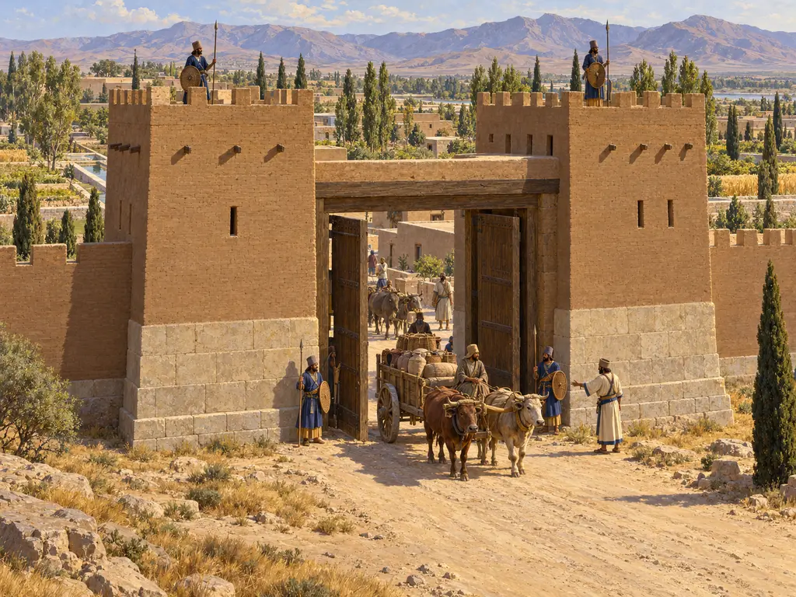
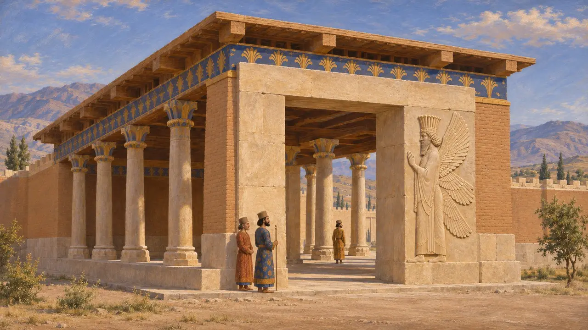
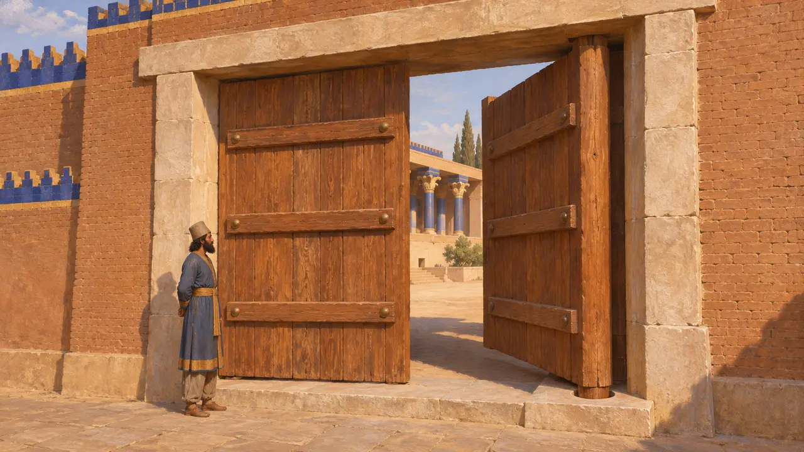
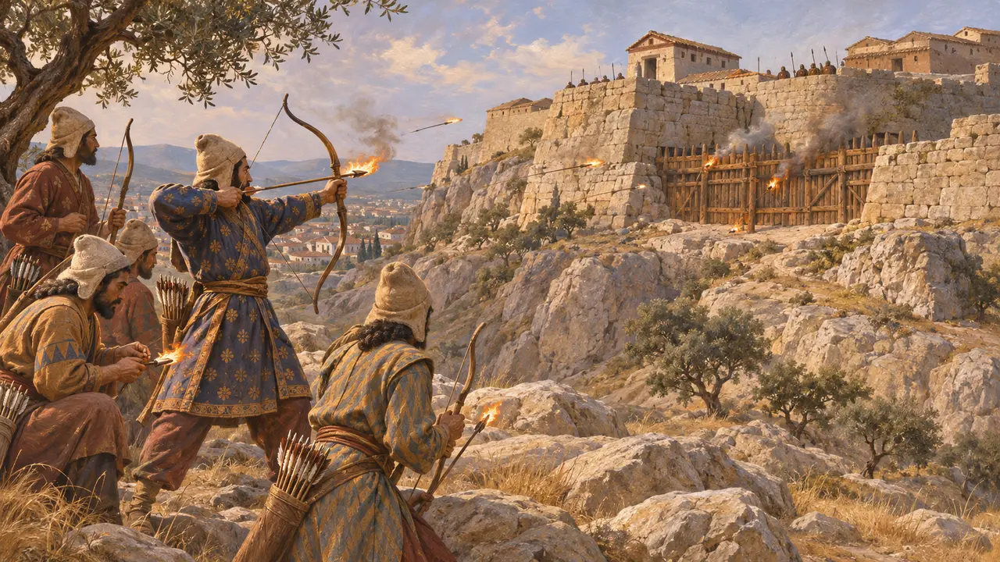
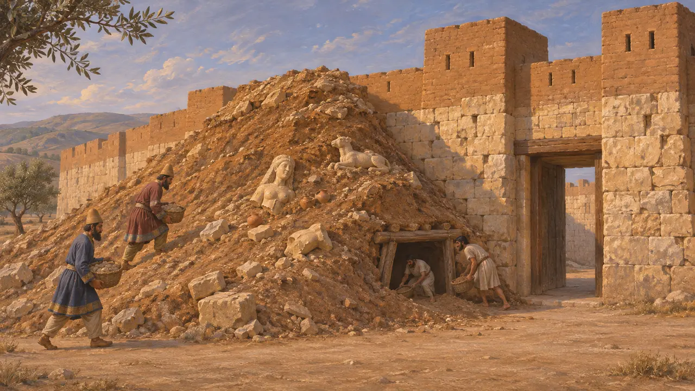
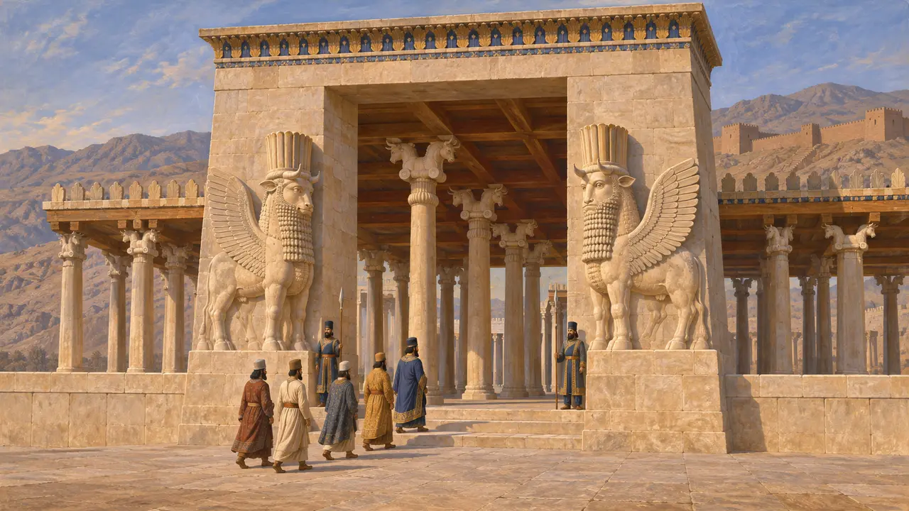

سردر
دروازههای دفاعی و آیینی جهان هخامنشی، حدود 550-479 پ.م.
سردر در جایی برپا میشد که دیوار به راه میرسید. سردر یکی از معدود راههای ورود به شهر یا کاخی دیواردار بود و اغلب نخستین جایی که مهاجم بر آن میتاخت. در شاهنشاهی پارسی دروازهها هم برای دفاع بودند و هم برای شکوهنمایی: باروی شهرها دروازههای استوار داشت، و اقامتگاههای شاه سردرهایی باشکوه داشتند که تعیین میکردند چه کسی به او نزدیک شود.
در بازی: سردر سازهای تاریخی است که از پیش بر نقشهٔ مرحله قرار دارد و بازیکن آن را نمیسازد. درهای سدرینش در روزگار آشتی گشوده و در برابر یغماگران بسته میشوند؛ دژکوب و آتش به آن آسیب میزنند و سنگتراشان آن را مرمت میکنند. دروازههای واقعی شهرها به احتمال بیشتر از الوار بومی ساخته میشدند.

دروازههای شهرهای شاهی
در اسناددر پاسارگاد، بر یکی از چارچوبهای در سردری که به دروازهٔ R شهرت دارد، پیکری کندهکاریشده با چهار بال برجا مانده است. در تخت جمشید، خشایارشا در کتیبهاش بر دروازهٔ ملل میگوید که آن دروازه را او ساخته است. در شوش، کاوشگران سردری بزرگ در خاور کاخ داریوش یافتند، و در سال 1972 تندیسی از داریوش که در مصر ساخته شده بود در همانجا پیدا شد.
D. Stronach, Pasargadae, 1978; XPa; J. Perrot (ed.), The Palace of Darius at Susa, 2013

درها، پاشنهها و الوار
در اسنادلنگههای خودِ دروازهها بر جای نماندهاند. پاشنهگاههای سنگی نشان میدهند که درهای سنگین دولنگه در دروازههای بزرگ میچرخیدند. منشور بنیاد داریوش در شوش میگوید سدر از کوههای لبنان برای کاخ او آورده شد. چنین چوب گرانبهای وارداتی به بناهای شاهی میرفت و هیچ گزارشی از کاربرد آن در دروازههای عادی شهر نیست.
DSf; E. Schmidt, Persepolis I, 1953

دروازهها زیر یورش
روایت باستانیهرودوت میگوید باروهای بابل صد دروازه داشت که همه از مفرغ بودند. احتمالاً مقصودش درهایی چوبی با روکش مفرغ بوده است. او همچنین بازمیگوید که پارسیان در حدود سال 497، در ماه پنجم محاصره، با کندن نقب زیر بارو، سولی در قبرس را گشودند. به گفتهٔ او در سال 480 پارسیانی که بر آرئوپاگوس بودند تیرهایی پیچیده در کنف سوزان به سوی حصار چوبی آکروپولیس آتن پرتاب کردند.
Herodotus 1.179; Herodotus 5.115; Herodotus 8.52

خاکریز محاصره در پافوس
در اسناددر پالایپافوس در قبرس، کاوشگران تپهٔ محاصرهٔ بزرگی از خاک، سنگ و آوار یافتند که کنار دروازهٔ شمالشرقی بر دیوار انباشته شده بود. تاریخ آن را به بازپسگیری قبرس به دست پارسیان پس از شورش 498-497 پ.م. میرسانند. در انباشت آن تندیسهای شکسته و پیشکشیهای نذری دیده میشد، و مدافعان زیر آن نقب زدند تا فرو بریزد. هیچ نویسندهٔ باستانی این محاصره را وصف نکرده است.
F. G. Maier and V. Karageorghis, Paphos: History and Archaeology, 1984

دفاع یا نمایش
مورد مناقشهتاریخنگاران هنوز بحث میکنند که سردرهای شاهی تا چه اندازه برای دفاع ساخته شده بودند. تخت جمشید دیوار استحکاماتی با برجهایی بر دامنهٔ کوهِ پشت آن داشت. دروازهٔ همهٔ ملل و دروازهٔ R در پاسارگاد بیشتر به درگاههایی رسمی برای پذیرایی از دیدارکنندگان میمانند. بسیاری از پژوهشگران بر این باورند که این دروازهها بیشتر برای سامان دادن به راهِ رسیدن به شاه و به شگفت واداشتنِ آیندگان و روندگان، یعنی دیدارکنندگان، ساخته شده بودند.
P. Briant, From Cyrus to Alexander, 2002; E. Schmidt, Persepolis I, 1953
منابع
- D. Stronach, Pasargadae, 1978
- E. Schmidt, Persepolis I, 1953
- J. Perrot (ed.), The Palace of Darius at Susa, 2013
- DSf; XPa
- Herodotus 1.179; 5.115; 8.52
- F. G. Maier and V. Karageorghis, Paphos: History and Archaeology, 1984